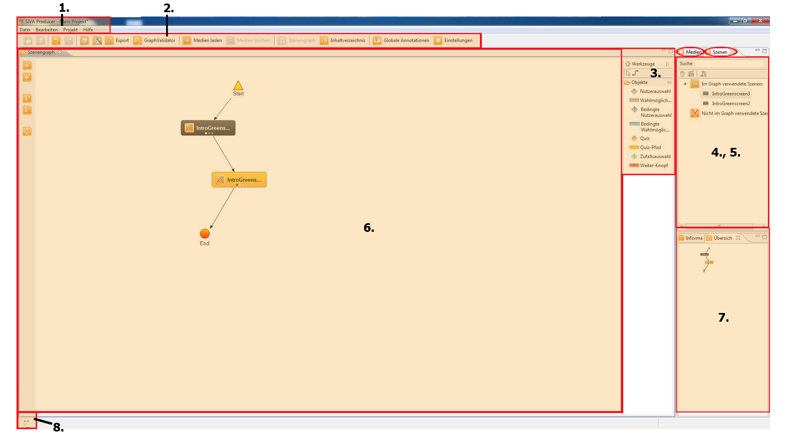

Benutzeroberfläche
Die Benutzeroberfläche des SIVA Producers besteht aus einer Menüleiste, verschiedenen
Views und Editoren.
In der Menüleiste sind die Items ausgeblendet die bei dem Status
in dem sich das Programm gerade befindet nicht verwendet werden können. Views dienen der
Anzeige von Objekten und von Informationen zu diesen Objekten. In Editoren können
verschiedene Objekte bearbeitet werden. Editoren und Views können frei angeordnet
werden. Dazu der Reiter mit gedrückter Maustaste an die Stelle bewegt, an der er
positioniert werden soll. Der dabei erscheinende Pfeil zeig an, wo der Editor/View angedockt
werden soll.

- Menüleiste: In der obersten Menüleiste gibt es Speicher- und Bearbeitungsoptionen
und Sie können die Projekteinstellungen ändern. Alle Einstellungen, für die es sonst
keinen Button gibt, finden Sie in den Dropdown-Menüs der obersten Leiste.
- Funktionsleiste: Einige der Menüleisten-Optionen sind über die Funktionsleiste noch
schneller zugänglich. Dazu zählen auch der GraphValidator, die Inhaltsverzeichnis-Optionen,
Globale Annotationen und Projekteinstellungen.
- Werkzeugleiste: Hier finden Sie die für das Erstellen einer Szenengraphstruktur
notwendigen Werkzeuge und Elemente.
- Medien-Repository: Alle importierten Medien finden Sie hier.
- Szenen-Repository: Im anderen Reiter, dem Szenen-Repository, werden die erstellten
Videoszenen dargestellt.
- Szenengraph: Der Szenengraph ist Ihr Hauptarbeitsplatz. Hier werden Videosequenzen
und Auswahlmöglichkeiten angeordnet und verknüpft. Über die Navigationselemente auf der linken Seite
kann die Arbeitsfläche vergrößert und verkleinert werden.
- Übersicht: Diese Übersicht zeigt den Szenengraph in verkleinerter Version. Sie wird
Ihnen zur Orientierung dienen, wenn Sie an richtig großen Projekten arbeiten.
- Verwaltung: Falls Sie die Anordnung der Editorelemente verändern wollen und dazu
weitere Elemente hinzufügen wollen, können Sie auf die hier unten versteckte Verwaltung zugreifen.
Auch falls Sie aus Versehen ein wichtiges Fenster schließen, kann es auch hierüber wieder hergeholt
werden.